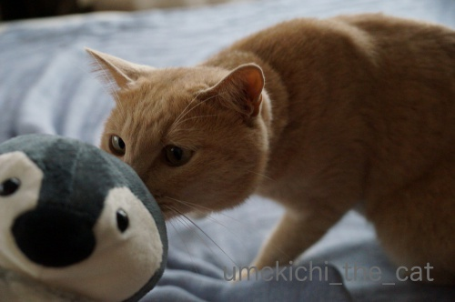
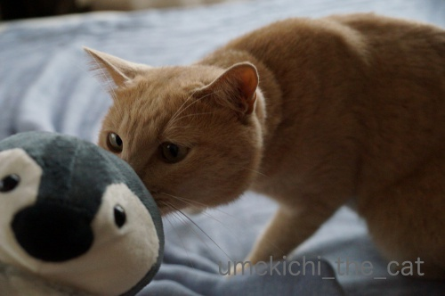

パペット、ペンちゃん [梅吉]
･゜ﾟ･*:.｡..｡.:*･゜ﾟ･*:.｡. .｡.:*･゜ﾟ･*･゜ﾟ･*:.｡..｡.:*･゜ﾟ･*:.｡..｡.:*･゜ﾟ･*
そら＆うみちゃんの捜索、似た猫の情報は何件か寄せられているようですが
いずれも猫違いだった様子。
先日は「そらちゃんを捕まえた！」との情報で確認に行くと似てはいるものの
月齢5ヶ月くらいの違うにゃんこだったそう。で結局ぽちさんのうちで引き取ることになったようです。
猫捜索って難しいですね・・・
新情報、新事実の判明などがあるといいなぁ。
←注意喚起のそら＆うみちゃんの写真は←サイドバーに移動しました←m(_ _)m
二匹の行方は引き続き注目し続けたいと思っております。
･゜ﾟ･*:.｡..｡.:*･゜ﾟ･*:.｡. .｡.:*･゜ﾟ･*･゜ﾟ･*:.｡..｡.:*･゜ﾟ･*:.｡..｡.:*･゜ﾟ･*

![[猫]](https://blog.ss-blog.jp/_images_e/101.gif) はっ！あんただれやー！！
はっ！あんただれやー！！

![[ペンギン]](https://blog.ss-blog.jp/_images_e/245.gif) みなさん、梅吉さん初めまして！僕はパペットのペンちゃん。
みなさん、梅吉さん初めまして！僕はパペットのペンちゃん。
300王国からやって来たよ！
おかーさんはペンギン好きだから僕が選ばれたみたい。
梅吉とプロレスしてね、って言われたけどプロレスってこうやって寄り添うことかい？
ぷろれすいうのは こうことじゃー！！！
一瞬微笑ましい展開になるかと思ったんですが・・・
梅吉のケリを入れる後ろ脚の躍動感が凄いです(⌒_⌒;
子猫だったらペンちゃんと勝手にプロレスしていたと思いますが
もう大人なので下僕が手を入れてお相手しないと遊んでくれませんでしたけどw
一人遊びとはいきませんでしたが良い遊び相手になってくれそうでなによりです。

あらら？今度はおんなじポーズで仲良しアピールですか＾＾
なぜかカメラ目線。

わしの方が可愛いアピールですか？(*>艸<)

ライバル意識も程々に仲良くしてくださいよ。

ペンちゃんも気になるけどマンションの廊下を走る小学生が気になる梅吉さん。
 ↑ガブッと一押し↑
↑ガブッと一押し↑
我が家からのウォーキングにはちょうど良い距離にある商業施設。
暑くて足が遠のいていましたが久々に買い物に行くと新しい店舗がオープン。
illusie300。スリコみたいな300円均一ショップです。
パペットペンちゃんはここで買いましたよー。
スリコとはちょっと違った傾向の可愛い雑貨がたくさんあります。
雑貨は猫orペンギンデザインのものがメインです。
私にとってはめっちゃポイント高し！！
思わず買ってしまった猫Tシャツ。これは500円。
猫のデザイン違い色違い、ペンギンデザインで
ものすごく悩んだ末にやっぱり猫Tシャツに。
500円の割には縫製もまあまあでしっかりしてます。
普段着にはぴったりかな＾＾
襟ぐりあたりは何年も持つ感じではありませんが
この値段ならワンシーズン着潰しでも惜しくないかも。
ペンギンデザインも欲しいなぁ・・・・・
そら＆うみちゃんの捜索、似た猫の情報は何件か寄せられているようですが
いずれも猫違いだった様子。
先日は「そらちゃんを捕まえた！」との情報で確認に行くと似てはいるものの
月齢5ヶ月くらいの違うにゃんこだったそう。で結局ぽちさんのうちで引き取ることになったようです。
猫捜索って難しいですね・・・
新情報、新事実の判明などがあるといいなぁ。
←注意喚起のそら＆うみちゃんの写真は←サイドバーに移動しました←m(_ _)m
二匹の行方は引き続き注目し続けたいと思っております。
･゜ﾟ･*:.｡..｡.:*･゜ﾟ･*:.｡. .｡.:*･゜ﾟ･*･゜ﾟ･*:.｡..｡.:*･゜ﾟ･*:.｡..｡.:*･゜ﾟ･*

300王国からやって来たよ！
梅吉とプロレスしてね、って言われたけどプロレスってこうやって寄り添うことかい？
一瞬微笑ましい展開になるかと思ったんですが・・・
梅吉のケリを入れる後ろ脚の躍動感が凄いです(⌒_⌒;
子猫だったらペンちゃんと勝手にプロレスしていたと思いますが
もう大人なので下僕が手を入れてお相手しないと遊んでくれませんでしたけどw
一人遊びとはいきませんでしたが良い遊び相手になってくれそうでなによりです。
あらら？今度はおんなじポーズで仲良しアピールですか＾＾
なぜかカメラ目線。
わしの方が可愛いアピールですか？(*>艸<)
ライバル意識も程々に仲良くしてくださいよ。
ペンちゃんも気になるけどマンションの廊下を走る小学生が気になる梅吉さん。
我が家からのウォーキングにはちょうど良い距離にある商業施設。
暑くて足が遠のいていましたが久々に買い物に行くと新しい店舗がオープン。
illusie300。スリコみたいな300円均一ショップです。
パペットペンちゃんはここで買いましたよー。
スリコとはちょっと違った傾向の可愛い雑貨がたくさんあります。
雑貨は猫orペンギンデザインのものがメインです。
私にとってはめっちゃポイント高し！！
思わず買ってしまった猫Tシャツ。これは500円。
猫のデザイン違い色違い、ペンギンデザインで
ものすごく悩んだ末にやっぱり猫Tシャツに。
500円の割には縫製もまあまあでしっかりしてます。
普段着にはぴったりかな＾＾
襟ぐりあたりは何年も持つ感じではありませんが
この値段ならワンシーズン着潰しでも惜しくないかも。
ペンギンデザインも欲しいなぁ・・・・・

カフェオレ色の梅吉

梅吉 2023年8月10日 永眠


梅吉と出会った譲渡会

犬猫の理由なき殺処分ゼロ
妄想広告
UMEKICHI 光

爆発的に早い！
時々攻撃的！
Thanks to Mr.Boss365
爆発的に早い！
時々攻撃的！
Thanks to Mr.Boss365

私もパペットのペンちゃんで遊んでみたい（ﾟ□ﾟ）
by 英ちゃん (2018-09-03 01:13)
梅吉さんはすっかりペンちゃんと仲良くなりましたね。Tシャツ500円は安いっ!
猫探しちぃさんがツイッターも貼ってくれたから私にも様子が見られます。気になってもツイッターってどこにどう行けばいいのかさっぱり分からなくて。
by zombiekong (2018-09-03 03:26)
こういうデザイン物で500円は安いですね＾＾
by ぽちの輔 (2018-09-03 07:27)
怪しいペンちゃん！！
と香りを嗅ぐ梅吉さんが可愛いですねぇ～(#^.^#)
へそ天の可愛いアピールもたまりませんが♪
良い遊び相手になりますね！
by きぃ (2018-09-03 07:28)
Tシャツ、ナイスコスパですっ！
着たおして、よれてきたら即、捨てるで
いいんじゃないですかー(^_^;)
by よーちゃん (2018-09-03 07:54)
梅吉様は目が魅力的ですよねぇ(〃'∇'〃)
だから、カメラ目線、最高で～す(^o^)丿
結局ペンギンさんより猫さんですか^_^;
by middrinn (2018-09-03 09:00)
お鼻ツンツンはインスタにも載っていましたね。
カメラ目線をとりながら〜の同じポーズ、可愛いアピールが可愛い。
猫の絵柄が格好良いです。
良い買い物しましたね。
どことなく、梅吉さんに似ているような（笑）
by kiki (2018-09-03 09:16)
カメラ目線の梅吉さん、可愛い〜♪
このぺんちゃんサイズだと、うちの吉は怖がって逃げちゃうんです。
梅吉さん、遊んで〜♪
by nachic (2018-09-03 09:31)
おはようございます。
覆面レスラーペンちゃん（ちぃさんの手）VS.浪速？の梅吉君！！
終わった後もカメラマン・報道陣にアピール！！可愛い過ぎです！！
ショーマンシップ？有望な新人レスラーの誕生です！！
首にチャンピオンベルトにしてあげたいです！！
梅吉君の覆面対決を望む！？(=^･ｪ･^=)
現状のそら＆うみちゃんの姿が、どう変化してるか？難しいです！！
良い情報を期待したいですね！！
by Boss365 (2018-09-03 10:51)
梅吉さん、いいお友達ができましたね！
ウチにもカバとワニのマペットがいます。どちらも「犬用」(≧▽≦)
子猫のころ、あまりに手足に噛みつくので、自衛用にホームセンターで購入、現在も活躍中。けれど、あんまり激しくパクパクやると逃げてしまう、とっても打たれ弱いこてつです^^;
猫＆ペンギンデザインがいっぱいのお店は魅力的♪
飼いやすいお値段も魅力的(#^^#)
by ゆきち (2018-09-03 12:59)
パペさん格闘おつです＾＾
なんでだろ、、ｗうちもかつてのファイト後は、、
並んで寝てました。
あれかな、少年漫画に良くある。。
「お前、なかなかやるな」
「おまえこそ」
「くす…あはははははははははは」
妄想中…ｗ
ペンギンさんもお疲れ様です♪
byかつてパペ格闘しようとして、
にゃんに無視された時のショックを思い出した猫毬より；；
by 猫毬 (2018-09-03 13:19)
あらまっ！
とってもキュートなお友達が仲間入りですね。
梅吉さん。いつもの愛くるしいキョトン顔で、パワフルなウエルカム・キック！！！
応戦するペンちゃん。
こちらもプリティなお顔で、グイグイ懐に食い込んでますねぇｗｗｗ
ところで、イルーシーは知りませんでしたが、これはヤバそう！
あまりのストライク・ゾーンに、
財布のひもが、ズルズル緩みそうで恐ろしいです(^▽^;)
by morichan (2018-09-03 14:27)
梅吉さん、ライバル心が出てきちゃったのでしょうか？
ペンギンさんのパペットも可愛い感じですね(^^)
by ma2ma2 (2018-09-03 17:43)
梅吉さん、ペンちゃんと仲良しですねぇ(^O^)
こうやって遊んでくれると「買って良かった＾＾」って思いますよねぇ(^-^)
一人遊びは無理だけど、パペット状態だと
梅吉さんがどんなにガブガブしてもケリケリしても無問題(^_^)v
うちもお迎えに行ってみようかな(^O^)
by ニッキー (2018-09-03 18:09)
梅吉さん、ライバルのペンギンと張り合っているように見えるのが最高です(^_^)
子猫だったら勝手に遊んでくれるのですが、こんな遊びも楽しいですね。
by kou (2018-09-03 18:13)
さすが梅吉さん！
誰とでも仲良くなれるのですね。^^)
仰向けまったりポーズに癒されました。
by yes_hama (2018-09-03 21:29)
パペット遊び、楽しそうです♪
私も買おうかな。300王国に行ってみようっと( ´∀｀ )
by マーヤ (2018-09-03 23:36)
300王国からの使者（笑）
しっかり、梅さまの「かわいがり」の施しを・・・^^;
パペットは、スリコ王国でもよく見かけて
ココロで遊びたいなぁとも思うのですが
どうせすぐ破壊されるだろうから、犠牲者は出さないよう
がまんしております(｡-_-｡)
にゃんこさん、無事に見つかると良いですね。
by Ja-Kou66 (2018-09-04 00:05)
300円お安いお得でしたね^^
by ニコニコファイト (2018-09-04 06:51)
梅吉君の方がカワイイから安心して良いよー^^
ちぃさんはペンギンちゃんが好きなのね。メモメモ^^
猫Tシャツすごいかわいい！！
イルーシー、知らないな～なんておもいながらショップリスト見たら
浅草東武ビルにある^^
週末、ちょうど浅草に行く用事があるから覗いてみるわ♪
by リュカ (2018-09-04 10:31)
英ちゃんさん＞
それは是非＾＾
ペンちゃん越しに梅吉とのプロレスを楽しんでくださいませー(≧▽≦)
zombiekongさん＞
すっかり仲良しで今ではペンちゃんが枕になってます。
どんどん闘争意欲が無くなっているような・・・
「ツイッター見られない」はTwitterのアカウントは不要だから
と思ってらっしゃるのかと早とちりでしたw
探し方、ですね！気の利かないことで失礼しましたーm(_ _)m
「ぽち」さんでは確かに検索が難しいですね・・・
ぽちの輔さん＞
２回ほど洗濯しましたが思ったより丈夫です＾＾
きぃさん＞
最初の写真の梅吉、ものすごーく不審そうな目つきをしていますよねw
でも怖がらずにしっかりふんふんニオイを嗅いでおりました＾＾
ペンちゃんにしっかり活躍してもらって
手の赤い線を減らしたいと思っています！
よーちゃん＞
ですよねー！
よれるまでいっぱい着ちゃおうっと。
でも捨てる前にパジャマになるかも＾＾
おばちゃんは簡単に捨てません＾＾
middrinnさん＞
梅吉はちょっと猫っぽくない目の形をしているので
それが特徴的なのかもしれませんね＾＾
「ねこものはいっぱいあるでしょ」と
「やっぱりねこでしょ」との葛藤・・・
最後は猫が勝つのですー。
kikiさん＞
インスタも見ていただいてありがとうございます！
ブログとインスタでは微妙に違う写真を載せるようにしています＾＾
今回の違いはどこでしょう？間違い探し、でーす( ´艸｀)
Tシャツのニャンコの絵、
確かに梅吉のいたずらする時の目つきによく似てるかも！！
nachicさん＞
きーちゃん、繊細ですね＾＾
小さいと怖くないのかな？
でもやさしいきーちゃんは梅吉みたいにペンちゃんを
蹴り倒したりしないでしょうねwww
梅吉は他の猫さんに会ったことがないのでどんな反応するか気になります！
意外に優しいところもあるのでキーちゃんとお友達になれるかな♪
Boss365さん＞
覆面レスラーちぃ、覆うものが出来てちょっと安心しています。
素手、大変なんですよー。
（でもぶっちゃけペンちゃんよりも素手が好きな梅吉www）
チャンピオンベルトありがとうございます！
国際大会の扱いでよろしいでしょうか( ´艸｀)
そら＆うみちゃんは直近の写真がないのが
ツライですね・・・
ゆきちさん＞
犬用・・・笑、笑。。。
でもうちもそのレベルなので「ああ一緒」という笑ですw
どうやらマペット系の方からグイグイ行くと
引いてしまう習性なのでしょうか・・・
うちもペンちゃんから仕掛けると逃げちゃうこともあります。
そして一つ思惑が外れたのが
ペンちゃんよりもやっぱり手が好きという事実www
イルーシー、是非是非〜。
猫毬さん＞
男同士、戦いの後は爽やかな空気が流れるものなんでしょうかw
パペ格闘、梅吉も気が乗らないとガン無視です・・・
手だと必ずガブガブしてくるのにー！
なまもの好きなのかしらねwww
morichanさん＞
そうなんです！ペンちゃんグイグイいきます＾＾
以外にヘタレなのかあんまりグイグイ行くと逃げちゃうので
加減が難しいですw
なま手だと逃げたりしないのにー！
イルーシー、是非のぞいて見てください。
300円なかなかのクオリティーです。
この手の店も差別化を図るようになって来たなって思いました。
ただこの店のコンセプトは「ヤング・ファミリー」。
ちょっと「なによ！おばちゃんだめ？」って思いました(*>艸<)
ma2ma2さん＞
ちょっと気に入らないヤツって思っているかもしれませんw
ペンちゃん、可愛いでしょーＯ(≧▽≦)Ｏ
ニッキーさん＞
ペンちゃん、無視されなくて良かったです＾＾
パペットさんの登場で私の腕や手の赤い線が減るかなって思ったのですが
肝心な時にペンちゃんが手近になかったり
やっぱりなま手の方が楽しそうだったり・・・
でもペンちゃんにはもっと活躍してもらいますよー！！
kouさん＞
初めのて可愛いライバル、梅吉も焦ったのでしょうか(^_^;)
一人遊びしないのは残念でしたが
一緒に遊ぶのも大切なコミュニケーションなので
ありがたくお相手を務めさせていただきます！
yes_hamaさん＞
物怖じぜすにペンちゃんと格闘してくれました＾＾
仰向けポーズは唐突に始まりました！
プロレス後のリラックスもあったのでしょうか ( ´艸｀)
マーヤさん＞
あかりちゃんもパペット喜んでくれるかな＾＾
がぶがぶも楽しいですよーＯ(≧▽≦)Ｏ
Ja-Kou66さん＞
王国の使者さんに早速洗礼を施した梅吉でしたw
そうでした！Ja-Kou66さんちには
梅吉が目標とする破壊王ココロさんがおわしましたよね！
惨状、想像できますー(*>艸<)
後片付けも大変そうなので却下、ですね！
にゃんこさんは情報も少なくなってきたのか
難しいようです・・・
ニコニコファイトさん＞
お安くかわいいペンちゃんを入手できました＾＾
リュカさん＞
そお？梅吉勝ってますか？？それは嬉しいーＯ(≧▽≦)Ｏ
ペンギンは好きな動物三本の指に入るかな？（あとパンダ）
漁網にペンギンがかかってしまったので
ペンギン飼ってますって聞くとうらやましくて・・・
お風呂で飼えないかなってマジに思ったw
イルーシー、行動圏内にあるのね！是非是非見てください。新鮮よ＾＾
by ちぃ (2018-09-04 15:24)
ちぃさん、梅吉さん、大丈夫でしたか？
台風通過、こんな暴風は生まれて初めてでした。
目の前で向かいのマンションの屋根がはがれて飛んだのを見て、ガラスが割れたらこてつを抱えてトイレにこもらなくちゃとマジで準備しましたよ。
玄関ドアが風圧で外へ引っ張られて雨が吹き込んでくるし、生きた心地がしませんでした。
こてつは腰が抜けたようで蹲って動かず、風が収まってもまだ固まったままです^^;
by ゆきち (2018-09-04 17:03)
ゆきちさん＞
おうちにいらしたのですね！こてつくんが一人じゃなくて良かった！！
私もこんなすごい暴風雨は初めて体験しました・・・
隣のマンションの屋根に打ち付ける雨が風の勢いで
間欠泉から塩が吹き出すように舞い上がるとは思ってもみませんでした。
あまりの風にガラスが割れたら怖い（暗かったのもあるけど）
早々にカーテンを閉めて何をするにも落ち着かず
テレビのニュースを見つめておりました。
梅吉は朝からハイテンションでウロウロ。
何か感じるものがあったのでしょうか。
が、いざ台風が吹き荒れるとベッドに入って寝ちゃいました(⌒_⌒;
時折の突風には体を起こして辺りを伺い怯えた様子でしたが
すぐにいつも通りに寝始めましたwどうやら自身の方が苦手？
２度ほど３分間くらいの停電があり焦りましたー。
今は雨も風も止んで静かになりましたがベランダが
飛んできた落ち葉やなんやかやでひどいです！
by ちぃ (2018-09-04 17:35)
台風、無事のようで良かった。
ベランダには飛んできた木の葉が散乱、暴風雨の中木の葉やビニル袋が
舞い上がっていました。
舌が出てるか出てないかが正解でしょうか？
by kiki (2018-09-04 17:43)
大阪で車がひっくり返っているのをニュースで視て
駆けつけましたが、御無事なようで何より(^_^;)
by middrinn (2018-09-04 18:38)
梅吉さんのケリで,、ずたずたにならないか、気になります(^^;
首回りが広くて着やすそうなTシャツですね。
首回りが狭いのを時々買って、息苦しい事があります(^^)
by riverwalk (2018-09-04 21:10)
kikiさん＞
娘さんも無事帰宅で良かったです！
清掃活動でお疲れのご様子。今日が金曜日だったら良かったのに！
写真の件！正解でーす＾＾
middrinnさん＞
車がひっくり返る、工事現場の足場が倒れるなど
被害の出たところもあったようです。
河川の多い大阪で浸水の被害が聞こえて来ていないのが
何よりだったなと思っています＾＾
（関空は別件www）
梅吉共々家族は無事で元気ですよー。
riverwalkさん＞
ケリケリでペンちゃんではない違う動物になる可能性はありですw
Tシャツ、夏には首回りが広い方が涼しいし良いですよねー。
ただ、私にはちょっと広めなので中に一枚が必要なようです。
以前拝見した（カメラを構えた）お写真で
riverwalkさんは線の細い方だと思っていましたが首、太い？？
鍛えてらっしゃるのかしらーＯ(≧▽≦)Ｏ
by ちぃ (2018-09-04 22:14)